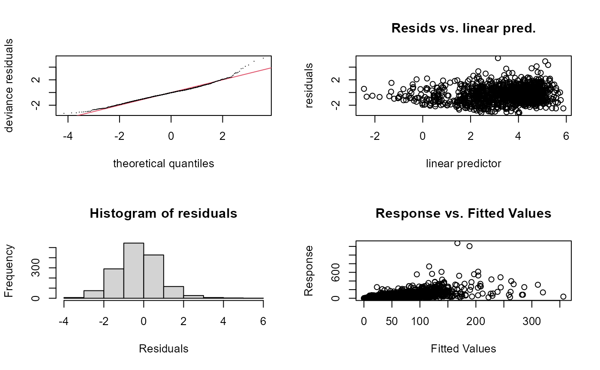
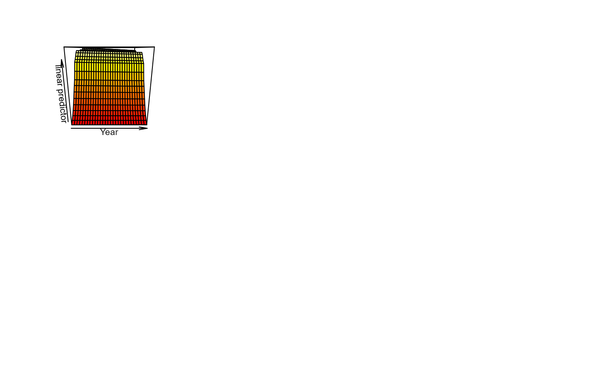
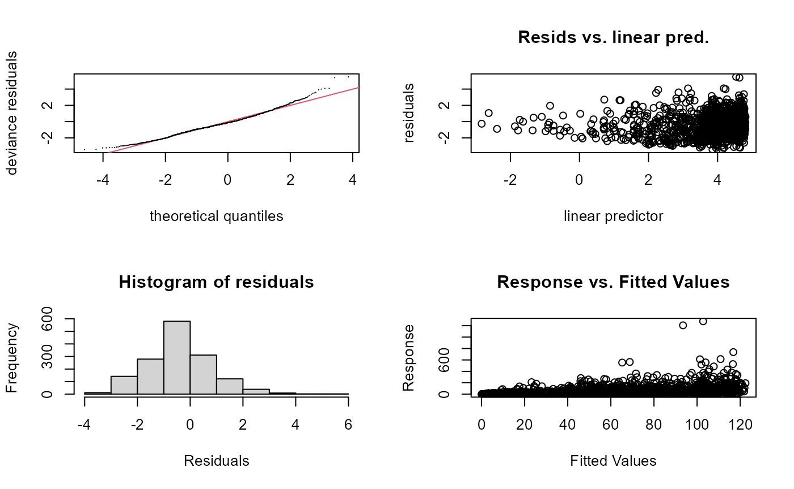

Compare {sdmgamindex} to regular GAMs
C-model-comparisons.RmdGAMs; the old fashioned way
1. Wrangle Data
SPECIES <- c(# must match common name column
"walleye pollock",
"yellowfin sole",
"red king crab"
)
YEARS <- 2015:2021
SRVY <- "EBS"
method <- "ML"
knotsP <- 376
dir_out <- "../inst/regular_gam_approach"
crs_latlon = "+proj=longlat +datum=WGS84"
crs_proj = "EPSG:3338"
dat <- sdmgamindex::noaa_afsc_public_foss
# Get cold pool data using cold pool data from the {coldpool} R package
dat <- dat %>%
dplyr::mutate(sx = ((longitude_dd - mean(longitude_dd, na.rm = TRUE))/1000),
sy = ((latitude_dd - mean(latitude_dd, na.rm = TRUE))/1000)) %>%
stats::na.omit() %>%
dplyr::filter(common_name %in% SPECIES &
year %in% YEARS &
srvy %in% SRVY) %>%
dplyr::rename(GEAR_TEMPERATURE = bottom_temperature_c,
BOTTOM_DEPTH = depth_m,
Year = year)
head(dat)
#> # A tibble: 6 × 35
#> Year srvy survey survey_id cruise haul stratum station vessel_name
#> <dbl> <chr> <chr> <dbl> <dbl> <dbl> <dbl> <chr> <chr>
#> 1 2016 EBS Eastern Bering… 98 201601 2 10 E-12 Vesteraalen
#> 2 2016 EBS Eastern Bering… 98 201601 2 10 E-12 Vesteraalen
#> 3 2016 EBS Eastern Bering… 98 201601 2 10 E-12 Vesteraalen
#> 4 2016 EBS Eastern Bering… 98 201601 2 31 D-10 Alaska Kni…
#> 5 2016 EBS Eastern Bering… 98 201601 2 31 D-10 Alaska Kni…
#> 6 2016 EBS Eastern Bering… 98 201601 2 31 D-10 Alaska Kni…
#> # ℹ 26 more variables: vessel_id <dbl>, date_time <chr>, latitude_dd <dbl>,
#> # longitude_dd <dbl>, species_code <dbl>, common_name <chr>,
#> # scientific_name <chr>, taxon_confidence <chr>, cpue_kgha <dbl>,
#> # cpue_kgkm2 <dbl>, cpue_kg1000km2 <dbl>, cpue_noha <dbl>, cpue_nokm2 <dbl>,
#> # cpue_no1000km2 <dbl>, weight_kg <dbl>, count <dbl>, GEAR_TEMPERATURE <dbl>,
#> # surface_temperature_c <dbl>, BOTTOM_DEPTH <dbl>, distance_fished_km <dbl>,
#> # net_width_m <dbl>, net_height_m <dbl>, area_swept_ha <dbl>, …2. Formulas
fm <- list(
# Null model spatial and temporal with an additional year effect
"fm_1_s_t_st" = "Year +
s(sx,sy,bs=c('ts'),k=376) +
s(sx,sy,bs=c('ts'),k=10,by=Year)",
# Mdoel with simple covariates
"fm_2_cov" =
"s(BOTTOM_DEPTH,bs='ts',k=10) +
s(log(GEAR_TEMPERATURE+3),bs='ts',k=10)"
)3. Run simple GAM models
Here are all of the models we want to try fitting:
comb <- tidyr::crossing(
"SPECIES" = SPECIES,
"fm_name" = gsub(pattern = " ", replacement = "_", x = names(fm))) %>%
dplyr::left_join(
x = .,
y = data.frame("fm" = gsub(pattern = "\n", replacement = "",
x = unlist(fm), fixed = TRUE),
"fm_name" = gsub(pattern = " ", replacement = "_",
x = names(fm))),
by = "fm_name")
comb
#> # A tibble: 6 × 3
#> SPECIES fm_name fm
#> <chr> <chr> <chr>
#> 1 red king crab fm_1_s_t_st Year + s(sx,sy,bs=c('ts'),k=376) + s(sx,sy…
#> 2 red king crab fm_2_cov s(BOTTOM_DEPTH,bs='ts',k=10) +s(log(GEAR_TEMPERAT…
#> 3 walleye pollock fm_1_s_t_st Year + s(sx,sy,bs=c('ts'),k=376) + s(sx,sy…
#> 4 walleye pollock fm_2_cov s(BOTTOM_DEPTH,bs='ts',k=10) +s(log(GEAR_TEMPERAT…
#> 5 yellowfin sole fm_1_s_t_st Year + s(sx,sy,bs=c('ts'),k=376) + s(sx,sy…
#> 6 yellowfin sole fm_2_cov s(BOTTOM_DEPTH,bs='ts',k=10) +s(log(GEAR_TEMPERAT…
models <- fittimes <- list()
for(i in 1:nrow(comb)){
cat("Fitting ",comb$SPECIES[i],"\n", comb$fm_name[i], ": ", comb$fm[i], "\n")
temp <- paste0(comb$SPECIES[i], " ", comb$fm_name[i])
dat0 <- dat %>%
dplyr::filter(common_name %in% comb$SPECIES[i])
fittimes[[ temp ]] <-
system.time ( models[[ temp ]] <-
gam(formula = as.formula(paste0("cpue_kgha ~ ", comb$fm[i])),
data = dat0,
family = tw,
gamma = 1.4) )
}
save(models, fittimes, file = paste0("../inst/vigC_model_output.rdata"))4. Assess the model
b <- lapply(X = models, FUN = AIC)
bb <- sapply(models, `[`, 1)
# sdmgamindex::get_surveyidx_aic(models)
b <- AIC(models$`yellowfin sole fm_1_s_t_st`, models$`yellowfin sole fm_2_cov`)# get(paste0("b", 1:9))
b
#> df AIC
#> models$`yellowfin sole fm_1_s_t_st` 105.06470 13881.31
#> models$`yellowfin sole fm_2_cov` 15.22028 14558.49
# bb <- get(rownames(b)[b$AIC %in% min(b$AIC):(min(b$AIC)+5)])
# b$df %in% min(b$df):(min(b$df)+5)
# bb
#>
#> Method: REML Optimizer: outer newton
#> full convergence after 12 iterations.
#> Gradient range [-0.0005733144,2.745408e-05]
#> (score 5032.03 & scale 1.216341).
#> Hessian positive definite, eigenvalue range [1.671861,776.4961].
#> Model rank = 387 / 387
#>
#> Basis dimension (k) checking results. Low p-value (k-index<1) may
#> indicate that k is too low, especially if edf is close to k'.
#>
#> k' edf k-index p-value
#> s(sx,sy) 375.00 95.70 0.94 0.58
#> s(sx,sy):Year 10.00 3.08 0.94 0.59
vis.gam(bb)
cc <- predict.gam(object = bb, newdata = dat[dat$Year == 2021,])
dat0 <- dat[dat$Year == 2021,] %>%
dplyr::mutate(pred = cc)
figure <- ggplot() +
geom_point(data = dat0,
mapping = aes(x= longitude_dd, y = latitude_dd, color = pred))

#>
#> Method: REML Optimizer: outer newton
#> full convergence after 7 iterations.
#> Gradient range [-0.003097536,9.293221e-07]
#> (score 5221.523 & scale 1.41888).
#> Hessian positive definite, eigenvalue range [2.428442,758.3792].
#> Model rank = 19 / 19
#>
#> Basis dimension (k) checking results. Low p-value (k-index<1) may
#> indicate that k is too low, especially if edf is close to k'.
#>
#> k' edf k-index p-value
#> s(BOTTOM_DEPTH) 9.00 4.75 0.75 <2e-16 ***
#> s(log(GEAR_TEMPERATURE + 3)) 9.00 6.78 0.74 <2e-16 ***
#> ---
#> Signif. codes: 0 '***' 0.001 '**' 0.01 '*' 0.05 '.' 0.1 ' ' 1
vis.gam(bb)
cc <- predict.gam(object = bb, newdata = dat[dat$Year == 2021,])
dat0 <- dat[dat$Year == 2021,] %>%
dplyr::mutate(pred = cc)
figure <- ggplot() +
geom_point(data = dat0,
mapping = aes(x= longitude_dd, y = latitude_dd, color = pred))